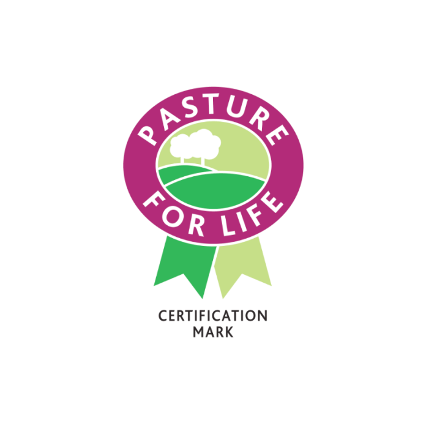
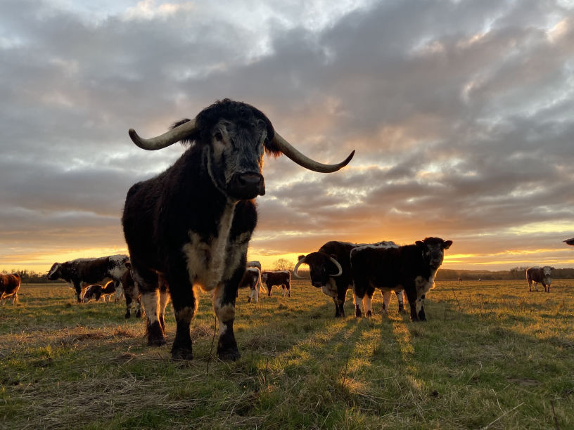
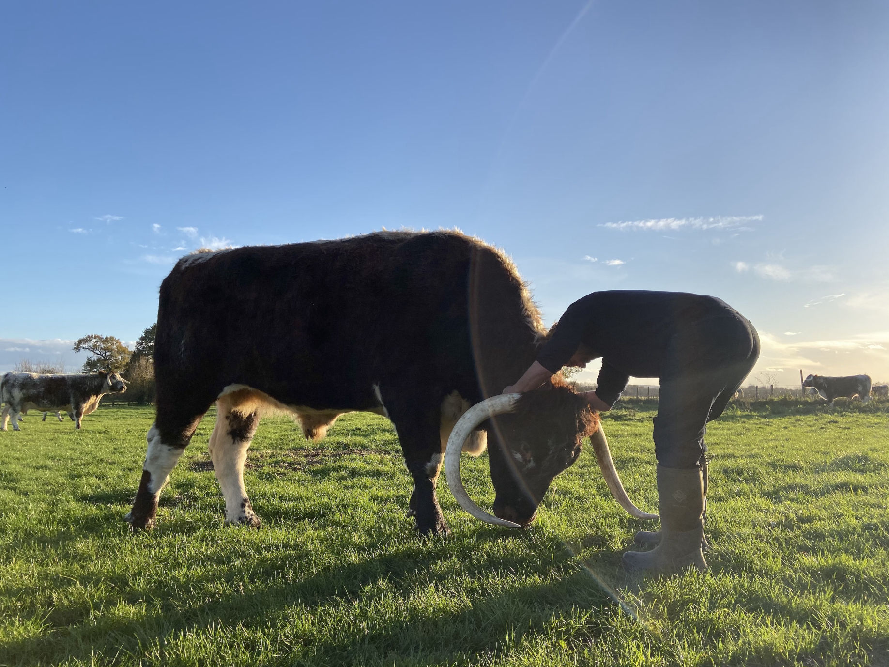

Free AI Website CreatorWe're a small, family-run organic farm at Hampton Gay, on the River Cherwell just outside Kidlington, about 7 miles north of Oxford. We farm for the environment and for our animals, and we sell our Longhorn beef, lamb and mutton direct to local families.
Tim and Juliet moved to Hampton Gay in 2016 after many years in London. Both come from long lines of farmers and gardeners, and running their own farm had always been the dream. Tim chose to build an organic suckler herd of Old English Longhorn cattle, which has grown from 6 cows to a herd of 55.
Tim's father was a renowned botanist and author who helped lay the foundations of the Millennium Seed Bank. From him, Tim took a lifelong interest in biodiversity and sustainability.

Juliet's mother's family farmed in Somerset for generations. She spent every childhood summer helping on her grandparents' sheep farm near Wincanton, and that experience shapes our flock today.
What we buy affects the health of the world around us and of our own families. We're a conservation-driven farm: we work with nature, not against it.
We aim to regenerate the land by building soil health and biodiversity. That means disturbing the soil as little as possible, growing a wide mix of plants, and planning our grazing so the land gets plenty of rest. We use no pesticides, herbicides or artificial fertilisers, and the whole farm is certified organic by OF&G. Our cattle are Pasture for Life certified, so our beef is 100% pasture-fed.


Free AI Website Creator